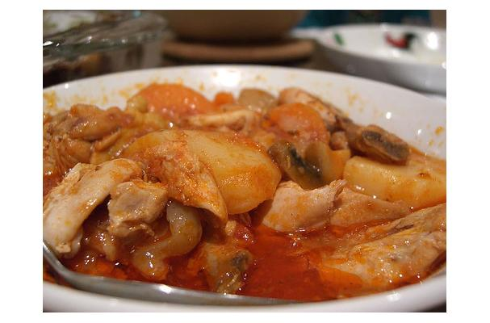

Ingredients
- 2 lbs chicken pieces
- 1 onion, chopped
- 3 cloves garlic, minced
- 1 cup peanut butter
- 4 cups chicken broth
- 2 cups sweet potatoes, cubed
- 1 cup carrots, sliced
- 1 cup bell peppers, diced
- 1 teaspoon ground cumin
- 1 teaspoon paprika
- 1/2 teaspoon cayenne pepper
- Salt and pepper to taste
Preparation
- In a large pot, heat oil over medium heat.
- Add chicken pieces and cook until browned on all sides.
- Remove chicken from the pot and set aside.
- In the same pot, sauté the onion and garlic until softened.
- Add the peanut butter, chicken broth, sweet potatoes, carrots, bell peppers, cumin, paprika, cayenne pepper, salt, and pepper.
- Bring the mixture to a boil, then reduce heat and simmer for 30 minutes or until the chicken is cooked through and the vegetables are tender.
- Serve hot and enjoy!